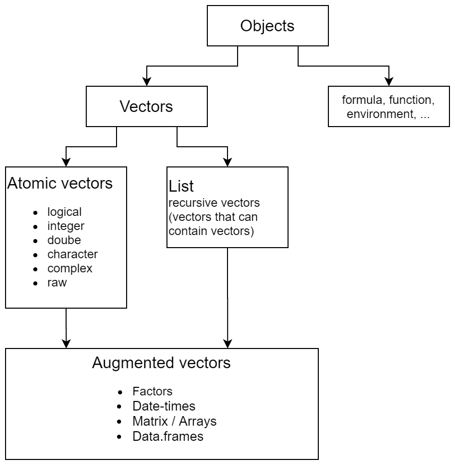
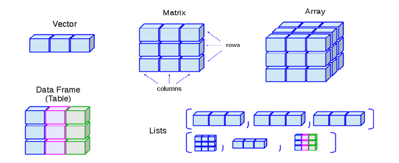
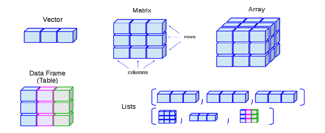

Chapter 2 Vectors
 

vector_types.png
Almost all data in R is stored in vectors. Most famous vector types are listed below
| Vectors | Description |
|---|---|
| Atomic vector | 1 dimensional collection, homogeneous, flat |
| List | 1 dimensional collection, heterogeneous, recursive |
| Matrix | Atomic vector 2 dimensions |
| Array | Atomic vector n dimensions |
| Data frame | List containing atomic vectors of same length |
homogeneous: only contains one data type flat: no nested structure (vector containing another vector) recursive: nesting is possible
All vectores can be described using 4 properties
| Property | Explanation | Example x <- 1:3 |
|---|---|---|
| Content | Information stored in the vector | 1 2 3 |
| Type | Data type (numeric, list, …) | integer |
| Length | Lenght of the vector | 3 |
| Attributes | Additional properties of the vector | NULL |
2.1 Type
2.1.1 Atomic
Within atomic vectors there are 6 vector types
- Logical (
TRUE) - Integer (
1L) - Double (
3.14) - Character (
"Hello") - Complex (
2+5i) - Raw (
48 65 6c 6c 6fbits)
L at end e.g. typeof(1) vs typeof(1L).
| Action | R command |
|---|---|
| Create | Create a vector with c(). The output of function c() is of a certain type. The type is determined by the following hierarchy (so called coercian = “Zwang”) NULL < raw < logical < integer < double < complex < character < list < expression |
| Check | typeof() or with is.character(), is.double(), is.integer(), is.logical() and more generally is.atomic() |
| Coerce | as.character(), as.double(), as.integer() or as.logical() |
2.1.2 List
| Action | R command |
|---|---|
| Create | Creat a list with list() or connect existing lists with c() |
| Check | is.list() |
| Coerce | as.list() |
| Unlist | Make atomic vector out of list: unlist() |
2.1.2.0.1 Subsetting lists
[extracts a sub-list, the result will always be a list[[extracts a single component from a list$is shorthand for extracting named elements of a list
2.1.3 Check type of vector
typeof()is_*()
| lgl | int | dbl | chr | list | |
|---|---|---|---|---|---|
is_logical() |
x | ||||
is_integer() |
x | ||||
is_double() |
x | ||||
is_numeric() |
x | x | |||
is_character() |
x | ||||
is_atomic() |
x | x | x | x | |
is_list() |
x | ||||
is_vector() |
x | x | x | x | x |
2.2 Length
length() or generalization for higher dimensional vectors (nrow(),ncol(),dim())
2.3 Attributes
- named list
- metadata about objects
- access all with
attributes() - set several attributes with
structure() - access, set and change single attribute with
attr()
a b c
1 2 3 $names
[1] "a" "b" "c"Set and change them with
- All at once
structure()
- Specific ones
names()/unname()dim()class()
a b c d e f g h i j
1 2 3 4 5 6 7 8 9 10
attr(,"foo")
[1] "bar"
attr(,"class")
[1] "myclass"Three attributes are not lost when object is modified
- Names: names of entries in vector
- Dimensions: define matrix and arrays
- Class: (e.g. numeric, data.frame, function, … implement S3 object system)
2.4 Factors
Factors
- Atomic vectors
- Type: integer
- Class: factor
- Additional attribute: levels
$levels
[1] "1" "2" "3" "4"
$class
[1] "factor"| Action | R command |
|---|---|
| Create | factor() |
| Check | is.factor() |
| Coerce | as.factor() |
Access set and rename levels with levels()
2.5 Matrices/Arrays
Adding dimensions to an atomic vector automatically changes it to an Matrix/Array
- Class: Matrix/Array (but not shown in attributes)
- Additional attribute: dim
| Action | R command |
|---|---|
| Create | matrix(), array() |
| Check | is.matrix(), is.array() |
| Coerce | as.matrix(), as.array() |
Access, set and change dimensions with dim()
Higher dimensional generalization of length(), names() and c()
| 1 dim | 2 dim | n dim |
|---|---|---|
length() |
nrow(), ncol() |
dim() |
names() |
rownames(), colnames() |
dimnames() |
c() |
rbind(), cbind() |
abind() |
2.6 Data frames
- Type: list
- Class: data.frame
- Additional attribute:
names,row.namesandclass
| Action | R command |
|---|---|
| Create | data.frame() |
| Check | is.data.frame() |
| Coerce | as.data.frame() |
Data frame columns can also contain lists and matrices, but it is better to use lists for this purpose.
2.7 Special values
| 0 | Inf | NA | NaN | |
|---|---|---|---|---|
is.finite() |
x | |||
is.infinite() |
x | |||
is.na() |
x | x | ||
is.nan() |
x |
2.7.1 Missing values
Different types of NA
NA_real_(double)NA_integer_NA_character_